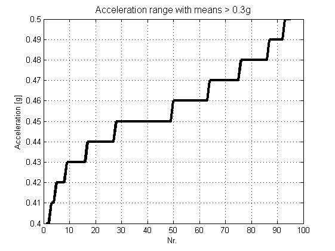

Contents
function sqlite_real_example
%{ % The logfile has folowing columns: 1: Code 2: Timestamp 3: Mileage at start (km) 4: Speed at start (km/h) 5: Engine speed at start (rpm) 6: Torque at start (Nm) 7: Duration (in tenths of a second) 8: Distance (m) 9: Speed at end (km/h) 10: Engine speed at end 11: Torque at end % Column count varies from 11 to 15, so optional columns 12 to 15 % are condensed to one column, which will be parsed later. % Optional additional columns depending on "Code": A: Optional parameter 1 B: Optional parameter 2 C: Optional parameter 3 D: Optional parameter 4 %}
Reading content of the logging file in one cell array
clear all, close all, clc fid = fopen ( 'logfile.asc', 'r' ); assert( fid > 0 ); % 1 2 3 4 5 6 7 8 9 10 11 (ABCD) content = textscan( fid, '%s %s %s %s %s %s %s %s %s %s %s %[^\r\n]', ... 'CollectOutput', 1 ); content = content{1}; colcnt = size( content, 2 ); fclose( fid );
Warning: mksqlite: Die noch geoeffneten Datenbanken wurden geschlossen
Create default SQL table, feeded by cell array
sql( 'open', '' ); % Create table with 11 standard columns and one optional column holding the remainder sql( [ 'CREATE TABLE mantab (' , ... ' Code, ' , ... ' Timestamp, ' , ... ' MileageStart REAL, ', ... ' SpeedStart REAL, ', ... ' EngSpeedStart REAL, ', ... ' TorqueStart REAL, ', ... ' Duration REAL, ', ... ' Distance REAL, ', ... ' SpeedEnd REAL, ', ... ' EngSpeedEnd REAL, ', ... ' TorqueEnd REAL, ', ... ' Optional TEXT )' ] ); sql( 'param_wrapping', 1 ); % allow implicit subsequent SQL queries % Pull entire data with a charming "three-liner" % All subsequent queries in one transaction for speed (noticeable when using % an on-disc database) sql( 'begin' ); sql( 'INSERT INTO mantab VALUES (?%s)', repmat( ',?', 1, colcnt-1 ), content' ); sql( 'commit' );
mksqlite Version 2.2 build: 109, ein MATLAB Interface zu SQLite
(c) 2008-2016 by Martin Kortmann <mail@kortmann.de>
Andreas Martin <andimartin@users.sourceforge.net>
basierend auf SQLite Version 3.10.2 - http://www.sqlite.org
mksqlite verwendet darueber hinaus:
- DEELX perl kompatible regex engine Version 1.3 (Sswater@gmail.com)
- BLOSC/LZ4 1.3.0-rc3.dev zur Datenkompression (Francesc Alted / Yann Collett)
- MD5 Message-Digest Algorithm (RFC 1321) Implementierung von Alexander Peslyak
Platform: PCWIN64, little endian
Identifying optional parameters and table update
Codes B, P and V carrying acceleration values in optional columns (A,B). Adding new column and translate parameter A and B as acceleration. Code O carries acceleration value in optional column A.
optional = { ...
{ '"B","P","V"', 'BPV_AccMean', 'BPV_AccRng' },
{ '"O"', 'O_LongAdj' },
};
% Creating new data column(s) and extract conditional parameters into them
for i = 1:numel( optional ) % rows of cell array 'optional'
code = optional{i}{1};
% Build regex pattern for one line entry.
re = cell( 2, numel( optional{i} ) - 1 );
re(1,:) = {'([^\t*]*)'}; % column data, chars not containing tabs
re(2,:) = {'\t'}; % column separator
re(end,end) = {''}; % last column has no tab
re = ['^', re{:}, '$']; % fence with 'begin' and 'end' constraints
for j = 2:numel( optional{i} ) % iterate used optional columns
% Create columns and update
colname = optional{i}{j};
sql( 'ALTER TABLE mantab ADD COLUMN %s REAL', colname );
sql( 'UPDATE mantab SET %s = REGEX( Optional, "%s", "$%d" ) WHERE Code IN (%s)', ...
colname, re, j-1, code );
end
end
Query some statistics
sql( 'result_type', 1 ); % Set result type to "struct of arrays" [result, count, names] = sql( 'SELECT * FROM mantab WHERE Code="B" AND BPV_AccMean>30 ORDER BY BPV_AccRng' ); plot( result.BPV_AccRng / 100, 'k-', 'linewidth', 3 ) title( 'Acceleration range with means > 0.3g', 'fontsize', 12 ); xlabel( 'Nr.' ); ylabel( 'Acceleration [g]' ); grid % Omit percental fractions of codes sql( 'result_type', 2 ); % Set result type to "cell matrix" result = sql( ['SELECT Code, ', ... 'ROUND(SUM(Distance)/(SELECT SUM(Distance) FROM mantab)*100,1) as Percentage ', ... 'FROM mantab ', ... 'WHERE Distance NOT NULL ', ... 'GROUP BY 1 ORDER BY 1'] )
result =
'A' [ 0]
'B' [ 9.199999999999999]
'H' [ 1.400000000000000]
'K' [ 2.300000000000000]
'L' [23.600000000000001]
'O' [ 0]
'P' [ 0.100000000000000]
'S' [ 0]
'U' [60.299999999999997]
'V' [ 3.100000000000000]
'Z' [ 0]
 Close database
sql( 'close' );